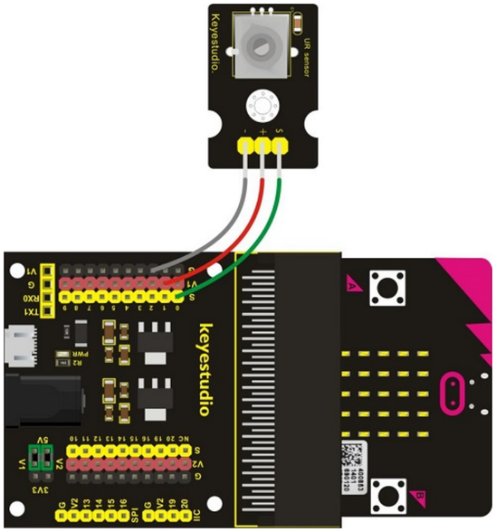

Piny I: Regulace jasu
Programujeme v micro:bit Python Editoru. Potenciometrem budeme řídit jas 3W LED.
Potřebné součásti
- samozřejmě micro:bit
- rozšiřující deska
- modul potenciometru (VR modul, otočný knoflík)
- modul 3W LED (Keyestudio 3W LED Module)
- propojovací vodiče (drátky) ×6
Fungování potenciometru a LED modulu
Potenciometr (VR modul) je knoflík, který se dá otáčet. Micro:bit podle natočení přečte číslo od 0 do 1023. Když je knoflík úplně vlevo, vyjde 0, když je úplně vpravo, vyjde 1023, a mezi tím se číslo plynule mění.
Toto číslo chceme poslat 3W LED modulu. Svítivost LED je podle hodnoty, kterou dostane: při 0 nesvítí, při 1023 svítí naplno a při hodnotách mezi tím svítí slaběji nebo silněji.
Zapojení modulů k micro:bitu
Oba moduly mají tři vývody: G (zem), V (napájení) a S (signál). Drátky zapojte takto:
| Modul | Vývod | Barva vodiče (drátku) | Pin na desce |
|---|---|---|---|
| VR modul | G (zem) | šedý (na obrázku) | G |
| VR modul | V (napájení) | červený (na obrázku) | V |
| VR modul | S (signál) | zelený (na obrázku) | P0 (S) |
| 3W LED | G (zem) | šedý (třeba) | G |
| 3W LED | V (napájení) | červený (třeba) | V |
| 3W LED | S (signál) | žlutý (třeba) | P1 (S) |

Jak na to v Pythonu
Piny P0, P1 a P2 umí pracovat v analogovém režimu. Hodnota není jen vypnuto/zapnuto (0 nebo 1), ale libovolné číslo od 0 do 1023.
Čtení (vstup) vrací číslo podle napětí na pinu. Takhle ukážeme natočení potenciometru zapojeného na P0:
from microbit import *
while True:
display.scroll(pin0.read_analog())Zápis (výstup) naopak nastaví „sílu“ signálu na pinu. Hodnota 0 znamená vypnuto, 1023 naplno a mezi tím se LED rozsvítí částečně:
pin1.write_analog(500)Pauzu v programu uděláte příkazem sleep(ms), například sleep(1000) počká jednu sekundu.
Nic, co má napětí vyšší než 3 V, nikdy nepřipojujte přímo na piny, mohli byste micro:bit poškodit.
Úlohy
Motivační úloha: Rozsvítit a zhasnout (vyřešená)
Nejdřív si vyzkoušíme, že LED opravdu umíme ovládat. Zatím bez potenciometru: LED se na vteřinu rozsvítí, na vteřinu zhasne a tak pořád dokola. Program si opište, nahrajte do micro:bitu a zkuste změnit délku pauz.
from microbit import *
while True:
pin1.write_analog(1023) # LED svítí naplno
sleep(1000) # čekej 1 sekundu
pin1.write_analog(0) # LED zhasne
sleep(1000) # čekej 1 sekunduProgram je v nekonečné smyčce while True, takže se pořád opakuje.
1.1 Úloha 1: Stmívač
Připojte 3W LED. Naprogramujte micro:bit tak, aby se jas LED řídil natočením knoflíku: čím víc otočíte doprava, tím víc LED svítí. Hodnotu, kterou přečtete z potenciometru, předejte přímo LED.
Knoflík se sám otáčí zleva doprava a zpátky. Čím větší hodnota, tím víc LED svítí.
Nápověda
Program se v nekonečné smyčce pořád dokola opakuje: přečte hodnotu z P0, uloží ji do proměnné a stejnou hodnotu pošle na P1.
from microbit import *
while True:
hodnota = ... # přečti pin0
... # pošli hodnotu na pin1Pokud si nejste jistí, jestli čtete správně, nejdřív hodnotu vypište na displej pomocí display.scroll(hodnota).
1.2 Úloha 2: Noční lampa
Upravte program tak, aby LED při malých hodnotách (například pod 100) úplně zhasla a nad touto hranicí se plynule rozsvěcela. Zkuste najít takovou hranici, aby se knoflík při zhasnutí příjemně ovládal.
Nápověda 1: zhasnutí
Použijte podmínku if / else. Pokud je hodnota menší než hranice, pošlete LED 0. Jinak pošlete hodnotu, kterou jste přečetli.
if hodnota < 100:
...
else:
...Nápověda 2: plynulý rozjezd
Když pošlete rovnou původní hodnotu, LED se těsně nad hranicí rozsvítí skokem na 100. Aby začínala od nuly, odečtěte hranici a výsledek přepočítejte, aby v nejvyšší poloze (1023) vyšlo zase 1023:
nova = (hodnota - 100) * 1023 // 923Dělení // dává celé číslo, což write_analog potřebuje. Zkuste hranici posouvat a hledat, která se vám ovládá nejlépe.
1.3 Úloha 3: Blikání
Změňte program tak, aby knoflík neovládal jas, ale rychlost blikání LED. Vlevo bliká pomalu, vpravo rychle. Pauza mezi bliknutími by se měla pohybovat od 50 do 1000 milisekund.
Čím víc je knoflík vpravo, tím kratší je pauza a LED bliká rychleji.
Nápověda 1: blikání
LED teď nepotřebuje žádné mezistupně jasu, jen zapnout a vypnout. Mezi tím je pauza, jejíž délku určuje potenciometr:
pin1.write_analog(1023)
sleep(pauza)
pin1.write_analog(0)
sleep(pauza)Nápověda 2: výpočet pauzy
Vlevo (hodnota 0) má být pauza nejdelší, tedy 1000 ms, a vpravo (hodnota 1023) nejkratší, tedy 50 ms. Hodnotu z potenciometru tedy musíte přepočítat z intervalu 0 až 1023 na interval 1000 až 50. Pozor, je to obráceně: čím větší hodnota, tím menší pauza.
pauza = 1000 - hodnota * 950 // 1023Zkuste si dosadit krajní hodnoty 0 a 1023 a ověřit, že vyjde 1000 a 50.